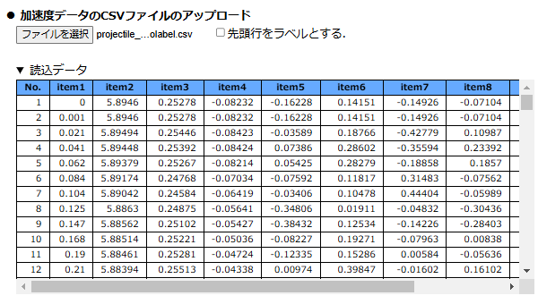

【操作方法】
■ CSVデータの読込
本アプリを開くと下図のようにファイルアップロード画面となる．「ファイルを選択」ボタンを押して，加速度データを含むCSVファイルをアップロードする．その際，CSVファイルの先頭行が各列のデータを表すラベルになっていれば，「先頭行をラベルとする」にチェックを入れる．

CSVファイルが読み込まれると下図のようにCSVデータがテーブルで表示される．ここでは，例として，加速度測定アプリで測定した放物運動の加速度データを示している．

CSVファイルの先頭行がラベルではなく，数値データとなっていれば，「先頭行をラベルとする」のチェックを外してからファイルを読み込む．この場合，下図のように各列のラベルは自動的に「item#」となる（#は列番号）．

また，加速度測定アプリで加速度データを測定後，測定アプリの「データの解析」ボタンを押して，スマートフォンやタブレット上で本アプリを開いた場合は，測定した加速度データを読み込んだ状態で開くので，データ保存・読込をすることなく直接解析に進むことができる．
CSVデータの読み込み後，必要であれば，数値データにおける長さの単位と時間の単位を設定する．また，「▶ グラフのマーカー・線の設定」の行をクリックすると，後でデータをグラフ化する際のグラフのマーカー・線のモードやサイズの設定を変更することができる（各種設定）．
各種設定が済めば，時刻列と加速度列の選択に進む．